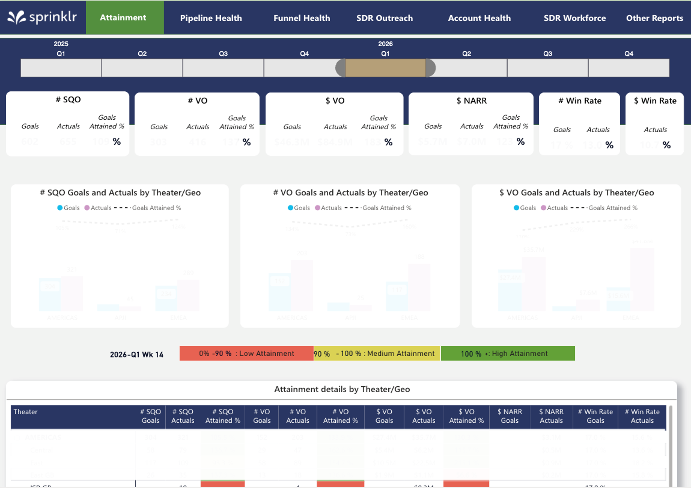
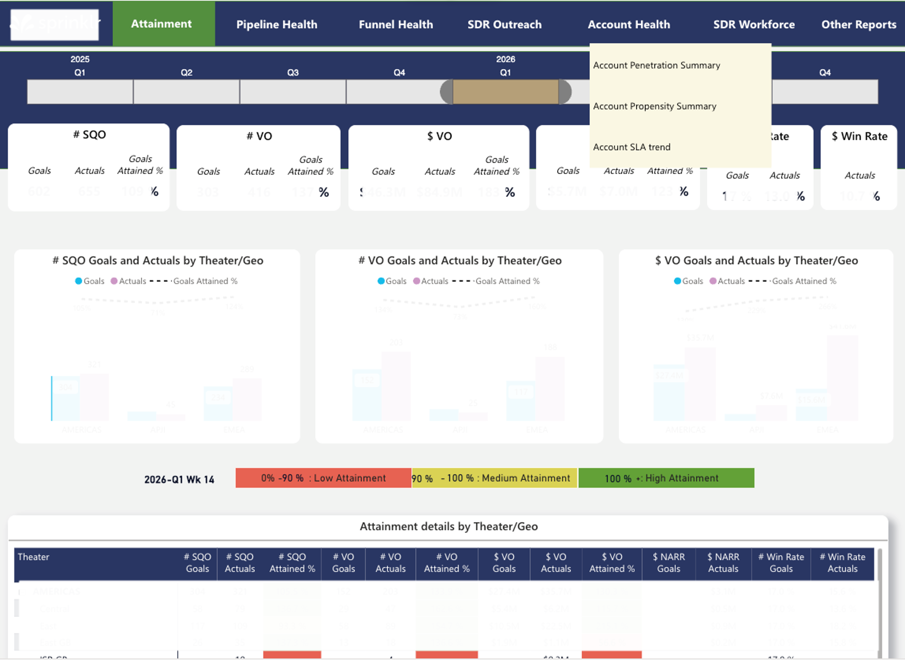

Executive Sales Performance Storyboarding
Sprinklr · Power BI (Storyboarding, DAX, Guided Navigation) ·
SQL (Modeling, Validation) ·
Finance-aligned KPIs · ~50+ users
Power BI
SQL
Metric Governance
Executive Reporting
Context & Problem
- 10+ Power BI dashboards with deep page hierarchies
- Navigation relied on memory recall and context switching
- Inconsistent KPI definitions across dashboards
- Leadership reviews were primarily Excel-driven
My Approach
- Consolidated reporting into a single governed executive storyboard
- Designed web-like top navigation aligned to executive mental models
- Partnered with Finance and Sales Ops to standardize KPIs
- Applied consistent page structures for fast interpretation
Impact
- Established a Finance-aligned single source of truth
- Scaled adoption to 50+ users across Sales, SDR, Marketing, Finance
- Shifted leadership from Excel-led to dashboard-led meetings
- Reduced manual reconciliation during executive reviews

Storyboard with governed structure and nav

Guided navigation for quick access to views
Sales Fiscal Year Capacity & Goal Planning
RevOps / Sales Strategy · SQL · Excel (Scenario Modeling)
Capacity Planning
Revenue Modeling
Sales Strategy
Context
- Leadership needed to commit to fiscal-year revenue goals and hiring plans
- Planning relied on fragmented spreadsheets with limited linkage between drivers
Approach
- Modeled bottom-up SDR capacity using headcount, tenure, attrition, and seasonality
- Translated $NARR goals into top-down SDR production requirements
- Reconciled capacity vs targets to identify execution gaps
- Developed strategies across account segmentation, hiring, and ramp assumptions
Key Decisions Enabled
- Recommended a ~20% reduction in SDR ramp time based on historical productivity
- Identified VP+ persona engagement as a key driver of win rate
- Informed a persona-focused strategy that materially improved win rates in pilot regions
Deliverables
- VO goal recommendations at CMO, theater, and SDR manager levels
- An Excel-based simulation to model attainment impact under different scenarios